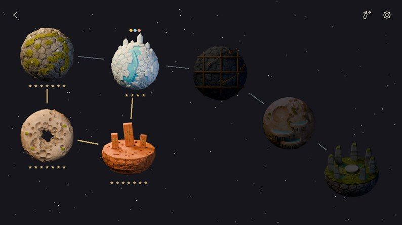
Seven Steps
Official 2026 Unity Game Jam · Unity 6 · 웹 · Windows
일곱 번째 걸음만 세상을 바꾸는 턴제 퍼즐, 50스테이지
itch.io에서 플레이 ↗GAME MAKER · 게임 기획자 엄소윤
2023년 첫 IP 게임부터 AI로 코드와 아트 초안을 만들었습니다. 2026년 11월에는 AI 에이전트 팀과 게임 한 편을 8일 만에 끝까지 완성했습니다. 무엇을 만들지 정하고, 결과를 판정하는 일은 제가 합니다.
AI와 사람의 역할을 어떻게 나누나요?
시작할 때 AI에 맡길 범위와 사람이 승인할 지점을 먼저 정합니다. AI의 범위는 초안에서 게임 전체로 넓어졌지만, 이 원칙은 같습니다.
AI는 초안까지, 디자이너가 다듬어 한 캐릭터로 통일했습니다.
GPTs 초안 → 기획자 수정 → 팀 리뷰 → IP 홀더 검수
사람 1 · 조율자 1 · 에이전트 9, 배포는 제 승인 뒤에만
성격이 다른 AI 테스터 3명에게 정답 없이 플레이하는 QA를 맡겼습니다.
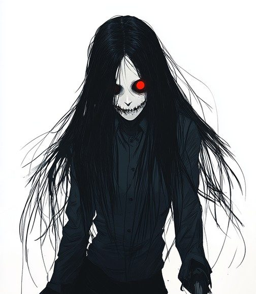
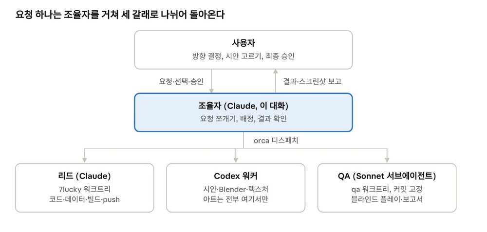
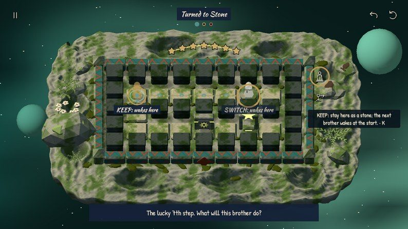
문제를 어떻게 정의하고 나누나요?
AI가 잘 답하려면 '무엇이 맞는 결과인가'가 먼저 정해져야 합니다. 그래서 맡기기 전에 기준을 정의하고, 한 번에 확인할 크기로 나눕니다.
'원작과 맞는가'를 말투 기준 네 가지로 나눠 GPTs에 맡겼습니다.
ID 규칙과 데이터 명세를 먼저 정리한 뒤 LLM과 연결했습니다.
다섯 갈래 피드백을 "왜 셋인가"라는 한 질문으로 묶었습니다.
규칙 원본을 코드에 하나만 두고 솔버로 웹과 Unity를 맞췄습니다.
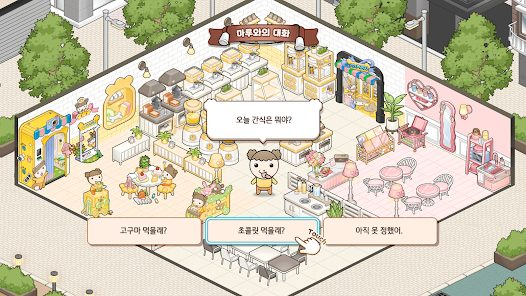
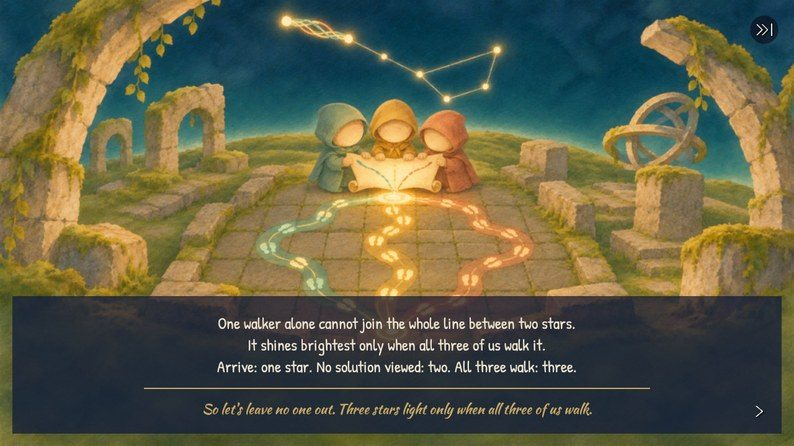
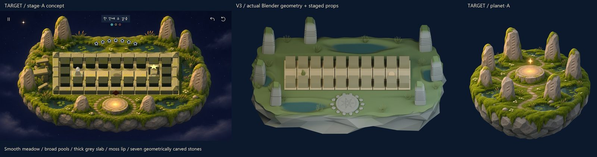
새 도구를 얼마나 빨리 익혀 쓰나요?
AI의 답을 검증하려고 엔진을 공부했습니다. 10월에 익힌 에이전트 운용을 11월 게임잼 출품작에 바로 썼고, 실패는 규칙으로 남겼습니다.
AI가 제안한 쿨타임 5초를 플레이해 보고 1 ~ 30초로 나눴습니다.
AI가 못 푼 버그를 Unity 생명주기를 공부해 직접 찾았습니다.
AI Study에서 익힌 운용을 한 달 뒤 Unity 게임잼 출품작에 썼습니다.
난이도는 못 잰다는 것을 확인하고, 퀴즈로 이해도를 쟀습니다.
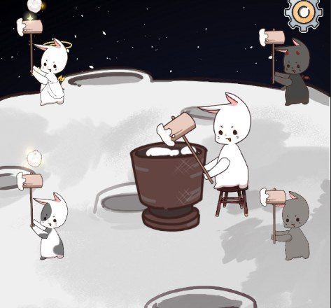
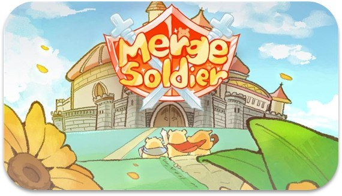
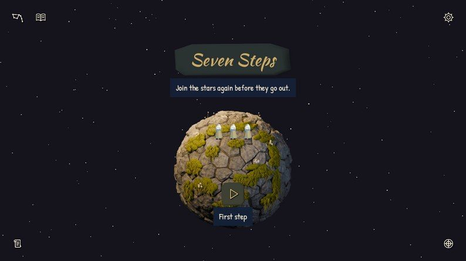
점은 AI가 맡은 범위입니다. 측정값이 아니라 구분입니다.
| 시기 | 게임 · 프로젝트 | AI가 맡은 범위 | AI가 만든 것 | 제가 한 것 | 영상 · 플레이 |
|---|---|---|---|---|---|
| 2023 | 순정빌런 | 몬스터 패턴 코드 | IP 관계성을 맵 생성 규칙으로 | 티저 ↗ | |
| 2024 | 달토끼네 방앗간 | C# 코드 · 밸런스 시뮬레이터 | 규칙과 값을 플레이로 확정 | - | |
| 2024 | Merge Soldier | 로직 · 애니메이션 코드 | 마일스톤 관리, 버그 직접 추적 | 트레일러 ↗ | |
| 2024 ~ 25 | 화이트데이 | 배경 · 캐릭터 아트 초안 | 아트 공정 · 퍼즐 설계 · PM | 트레일러 ↗ | |
| 2025 ~ | 마루는 강쥐 | 대사 검수 · 조회 · SQL 초안 · 도구 | 기준 · 지표 · IP 검수 | - | |
| 2026.10 | AI Study | 에이전트 6종이 설계 · 아트 · 코드 | 역할 정의 · 승인 · 판정 | - | |
| 2026.11 | Seven Steps | 에이전트 9개가 게임 전체 | 방향 · 시안 선택 · QA 기준 | 플레이 ↗ |
2026년 11월, AI 에이전트 팀과 만들어 Unity 게임잼에 출품한 작품입니다.

Official 2026 Unity Game Jam · Unity 6 · 웹 · Windows
일곱 번째 걸음만 세상을 바꾸는 턴제 퍼즐, 50스테이지
itch.io에서 플레이 ↗AI 활용 포트폴리오가 대표 문서이고, 경력 · PR 문서도 함께 볼 수 있습니다.
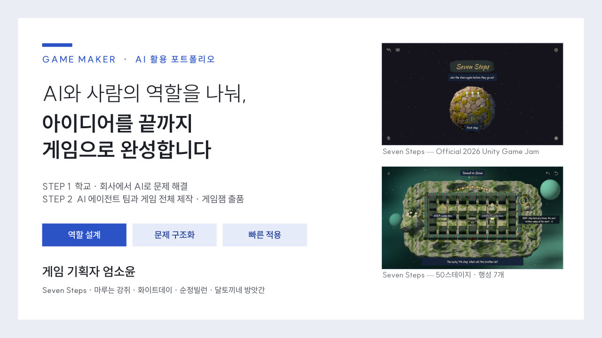